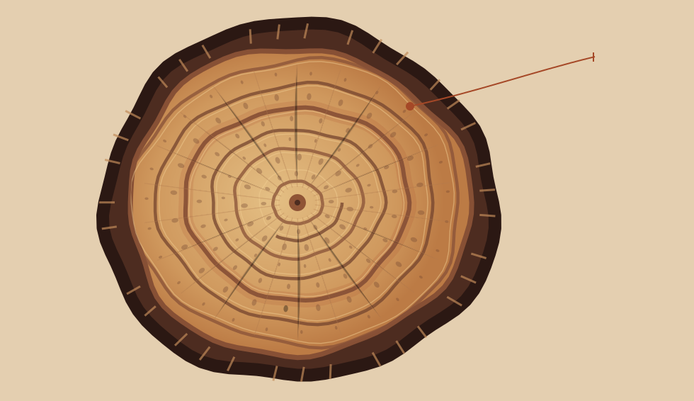
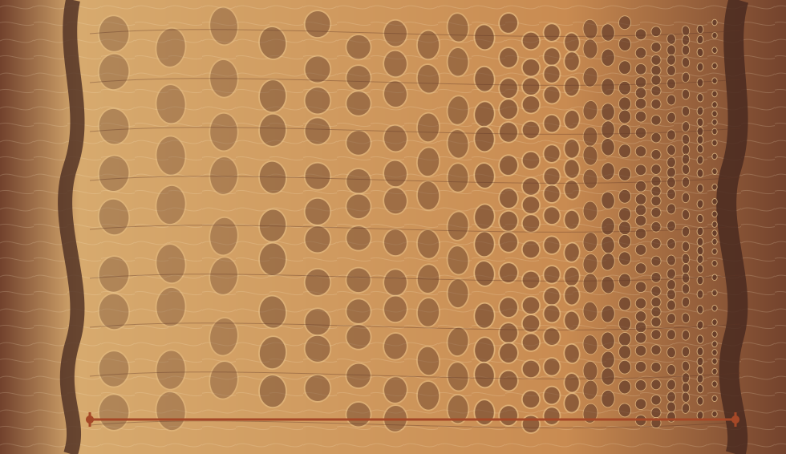
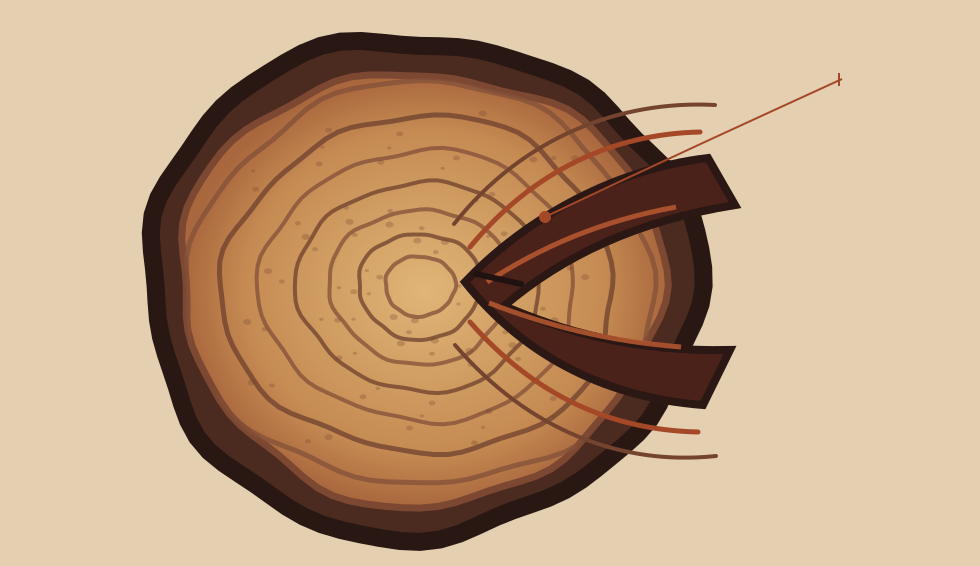

深色晚材标出生长季的终点
疏 → 密早材导水孔大、细胞壁薄；晚材孔小、壁厚，颜色随之加深。

一圈内部，孔径由大变小
早材不是另一圈它与随后形成的晚材属于同一个生长季。下一排大孔出现时，新的年份才开始。

伤口让后来的年轮改道
生长没有穿过伤口形成层从缺口两侧继续增生，新木材逐年包围旧伤；弯曲的位置因此保留了受损记录。
许多温带阔叶树的早材孔大、常显浅，晚材孔小、常显深。两段相接，构成一个生长季。

早材导水孔大、细胞壁薄；晚材孔小、壁厚，颜色随之加深。

它与随后形成的晚材属于同一个生长季。下一排大孔出现时，新的年份才开始。

形成层从缺口两侧继续增生，新木材逐年包围旧伤；弯曲的位置因此保留了受损记录。